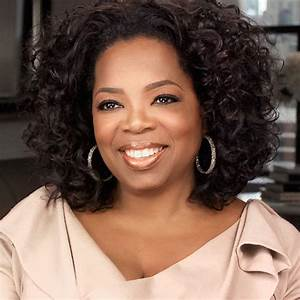
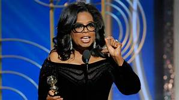
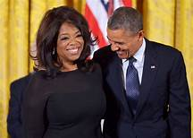

OPRAH WINFREY PLUS QU'UNE FEMME, UNE GUÉRRIERE
Oprah Winfrey est née le 29 janvier 1954 à Kosciuszko est une actrice, critique littéraire, productrice et animatrice de télévision. Oprah a eu une grande médiatisation suite à l’interview qu’elle a faite à Michael Jackson à son domicile en 1993. Cette interview a été suivie en direct dans le monde entier par des millions de spectateurs.
UN SUCCES PEU ATTENDU
Mais rien ne la prédestinait à ce succès. Elle a eu une enfance très difficile : elle fut violée à 9 ans et elle tomba enceinte à 14 ans, elle aura l’enfant, mais il mourra peu de temps après l’accouchement. Elle doit souvent changer d’endroit où vivre entre chez sa grand-mère chez sa mère ou encore chez son père. Son réconfort est les études, jeune fille très intelligente, elle arrive à commencer à faire du journalisme à 17 ans dans une petite radio, mais elle ne veut pas faire seulement de la petite radio et donc elle déménage à Chicago et réussi à se faire engager à la télé pour présenter l’émission AM Chicago. En 1986, elle est la première femme à diriger son propre talk show nommée “The oprah Winfrey Show”. Ce programme a été le programme le plus visionné de toute l’histoire de la télévision et il a été à l'antenne jusqu'en 2011. Oprah n’est pas seulement une présentatrice, c’est aussi une business woman. Elle crée notamment sa marque qui s’appelle O Magazine et crée aussi son association caritative nommée Harpo qui est son prénom à l’envers, elle crée encore d'autres choses comme sa société de production ou encore sa chaîne câblée.
SON ENGAGEMENT
Puisque c’est une femme très engagée, elle crée en 2007 unes organisations caritatives pour instruire les jeunes filles pauvres âgées de 8 à 12 ans à Johannesburg en Afrique du Sud. Cette organisation s'appelle L'Oprah Winfrey Leadership Academy for Girls. Elle soutient également de nombreuses organisations telles que Women for Women International qui est une organisation qui est destinée aux femmes qui ont survécu à la guerre il y a également Girl Effect qui est une organisation qui a pour but d’arrêter la pauvreté des jeunes femmes.
UN DISCOUR DE GRANDE AMPLEUR
En 2018, elle a fait un discours au Golden Globe qui a prouvé encore une fois son engagement auprès des femmes. Elle dit dans son discours, je cite : «Depuis trop longtemps, les femmes n'ont pas été entendues ou crues lorsqu'elles osaient parler de l'abus de pouvoir de ces hommes. Mais le temps est venu. Le temps est venu ! [...] Je veux que toutes les petites filles qui regardent en ce moment, sachent qu'un nouveau jour est sur le point d'arriver. Et que lorsque ce sera le cas, ce sera grâce à beaucoup de femmes magnifiques, qui sont pour beaucoup présentes dans cette salle en ce moment, et grâce à des hommes phénoménaux, qui se battent pour devenir ces leaders qui nous conduiront à ce moment où plus personne n'aura plus jamais à dire Me Too.»
SON COMBAT DANS LA POLITIQUE ET SON INFLUENCE
Oprah est une démocrate et a longuement soutenu Barack Obama lors de ces premières élections. Elle était très populaire au niveau politique également. De ce fait, le gouverneur de l’Illinois a même envisagé de lui donner un siège au Sénat des États-Unis. Oprah a été designer comme étant la femme la plus influente du monde selon l’Amercian Spectator. Elle est aussi la femme noire la plus influente de sa génération.
Si vous voulez connaître et vous renseigner sur d’autres figures du féminisme aux Etats-Unis cliquez ici
i  ARTICLE SUIVANT